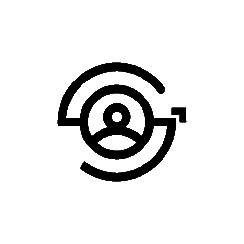

    <!-- Logo alanı -->
    <header>
        
    </header>

    <h1>GMT Kart Okuyucu</h1>
    <button id="toggleButton">Kamerayı Başlat</button>
    <div id="sonuc"></div>
    <div id="manualInput">
        <input type="text" id="barkodInput" placeholder="Kart numarasını girin" />
    </div>
    <button id="manualButton">Kart Numarası Gir</button>
    <div id="video"></div>
    <div id="turkiyeSaati"></div>
    <div id="gmt">GMT</div>

    <!-- Footer Başlıyor -->
    <footer>
        <div class="footer-section">
            <div class="footer-logo">
                
                <span>GMT</span>
            </div>
            <p>© Copyright 2023. All Rights Reserved. Powered by KKU Geleceğin Meslekleri Topluluğu</p>
        </div>
        
        <div class="footer-section">
            <h3>Hakkında</h3>
            <ul>
                <li><a href="#">Team</a></li>
                <li><a href="#">History</a></li>
                <li><a href="#">Careers</a></li>
            </ul>
        </div>
        
        <div class="footer-section">
            <h3>Gizlilik</h3>
            <ul>
                <li><a href="#">Privacy Policy</a></li>
                <li><a href="#">Terms and Conditions</a></li>
                <li><a href="#">Contact Us</a></li>
            </ul>
        </div>

        <div class="footer-section">
            <h3>Sosyal</h3>
            <ul>
                <li><a href="#">Etkinliklerimiz</a></li>
                <li><a href="#">Hakkımızda</a></li>
                <li><a href="#">Anlaşmalı Yerler</a></li>
                <li><a href="#">Anasayfa</a></li>
            </ul>
        </div>
    </footer>
    <!-- Footer Bitiyor -->

    <script>
        const kullanicilar = [
            { kart_no: '2371046800014', isim: 'Mehmet Kaan Temiz' },
            { kart_no: '2371046800021', isim: 'Oğuzhan Turan' },
            { kart_no: '2371046800168', isim: 'Elif Gökdemir' },
            { kart_no: '2371046800175', isim: 'Elif Yavuz' },
            { kart_no: '2371046800182', isim: 'Sercan Ergül' },
            { kart_no: '2371046800410', isim: 'Halil Erdem Şişman' },
            { kart_no: '2371046800441', isim: 'Demirhan Tokatlı' },
            { kart_no: '2371046800571', isim: 'İrem Çalım' },
            { kart_no: '2371046800199', isim: 'Zeynep Şeyda Sahancı' },
            { kart_no: '2371046800236', isim: 'Selen Başak Temiz' },
            { kart_no: '2371046800151', isim: 'Ali Tuna Erdoğan' },
            { kart_no: '2371046800502', isim: 'Dilara Özdemir' },
            { kart_no: '2371046800625', isim: 'Semiha Alan' },
            { kart_no: '2371046800519', isim: 'Seza Berfin Soykan' },
            { kart_no: '2371046800755', isim: 'Ebru Özlük' },
            { kart_no: '2371046800748', isim: 'Uzeyr Talha Erdugan' },
            { kart_no: '2371046800434', isim: 'Zehra Can' },
            { kart_no: '2371046800731', isim: 'AbdülKerim Altıntaş' },
            { kart_no: '2371046800700', isim: 'Hasan Bilgehan Kaplan' },
            { kart_no: '2371046800601', isim: 'Gülsüm Özge Coşkun' },
            { kart_no: '2371046800144', isim: 'Berkay Eliri' },
            { kart_no: '2371046800038', isim: 'Tarık Soykan' },
            { kart_no: '2371046800113', isim: 'Yasin Karaman' },
            { kart_no: '2371046800090', isim: 'Kübra Aydoğan' },
            { kart_no: '2371046800137', isim: 'Zehra Yavuz' },
            { kart_no: '2371046801233', isim: 'Cihan Demir' },
            { kart_no: '2371046800106', isim: 'Nilsu Yaren Ala' },
            { kart_no: '2371046800083', isim: 'Habibe Sever' },
            { kart_no: '2371046800052', isim: 'Ceren Taşkın' },
            { kart_no: '2371046800076', isim: 'Sena Tümer' },
            { kart_no: '2371046800045', isim: 'Merve Nur' },
            { kart_no: '2371046800816', isim: 'Beyza Küçük' },
            { kart_no: '2371046800809', isim: 'name' },
            { kart_no: '2371046800823', isim: 'Dila Su Aydın' },
            { kart_no: '2371046800830', isim: 'Melike Ergin' },
            { kart_no: '2371046800069', isim: 'Batuhan Özarslan' },
            { kart_no: '2371046800922', isim: 'Eralp Kılıçkaya' },
            { kart_no: '2371046800991', isim: 'Azra Karakuş' },
            { kart_no: '2371046800885', isim: 'Elif Sude Tepecik' },
            { kart_no: '2371046801400', isim: 'Mustafa Köseoğlu' },
        ];

        let cameraActive = false;

        async function checkCameraPermission() {
            try {
                const stream = await navigator.mediaDevices.getUserMedia({ video: true });
                return stream;
            } catch (err) {
                return null;
            }
        }

        function startBarkodOkuma() {
            Quagga.init({
                inputStream: {
                    name: "Live",
                    type: "LiveStream",
                    target: document.querySelector('#video'),
                    constraints: {
                        facingMode: "environment",
                        width: { min: 360, ideal: 720, max: 1280 },
                        height: { min: 240, ideal: 400, max: 720 }
                    }
                },
                decoder: {
                    readers: ["ean_reader", "upc_reader"]
                }
            }, (err) => {
                if (err) {
                    return;
                }
                Quagga.start();
                document.getElementById('video').style.display = 'block';
                cameraActive = true;
                document.getElementById('toggleButton').innerText = 'Kamerayı Kapat';
            });

            Quagga.onDetected((data) => {
                const barkodNumarasi = data.codeResult.code;
                const kullanici = kullanicilar.find(k => k.kart_no == barkodNumarasi);
                if (kullanici) {
                    document.getElementById('sonuc').innerHTML = `<strong>İsim-Soyisim:</strong> ${kullanici.isim} <strong>Barkod:</strong> ${barkodNumarasi}`;
                } else {
                    document.getElementById('sonuc').innerText = 'Kayıtlı kullanıcı bulunamadı';
                }
                Quagga.stop();
                document.getElementById('video').style.display = 'none';
                cameraActive = false;
                document.getElementById('toggleButton').innerText = 'Kamerayı Aç';
            });
        }

        document.getElementById('toggleButton').addEventListener('click', async () => {
            if (cameraActive) {
                Quagga.stop();
                cameraActive = false;
                document.getElementById('video').style.display = 'none';
                document.getElementById('toggleButton').innerText = 'Kamerayı Aç';
            } else {
                const permission = await checkCameraPermission();
                if (permission) {
                    startBarkodOkuma();
                } else {
                    document.getElementById('sonuc').innerText = 'Kamera izni verilmedi veya erişilemiyor';
                }
            }
        });

        document.getElementById('manualButton').addEventListener('click', () => {
            const barkodNumarasi = document.getElementById('barkodInput').value.trim();
            const kullanici = kullanicilar.find(k => k.kart_no === barkodNumarasi);
            if (kullanici) {
                document.getElementById('sonuc').innerHTML = `<strong>İsim-Soyisim:</strong> ${kullanici.isim} <strong>Barkod:</strong> ${barkodNumarasi}`;
            } else {
                document.getElementById('sonuc').innerText = 'Kayıtlı kullanıcı bulunamadı';
            }
        });

        setInterval(() => {
            const now = new Date();
            const turkiyeSaati = now.toLocaleTimeString("tr-TR", { timeZone: "Europe/Istanbul" });
            document.getElementById('turkiyeSaati').innerText = turkiyeSaati;
        }, 1000);
    </script>
</body>
</html>
